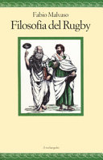
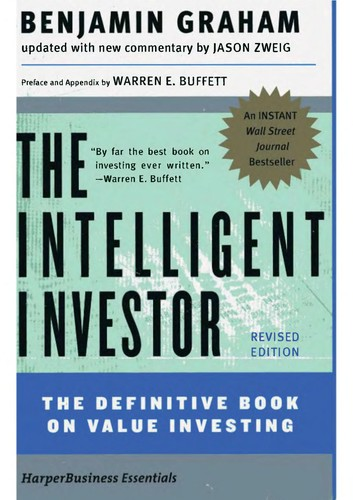
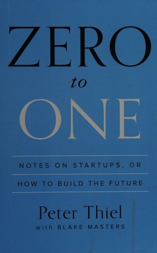
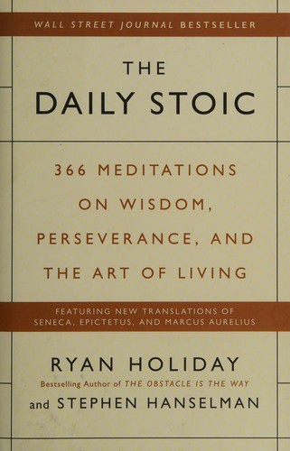
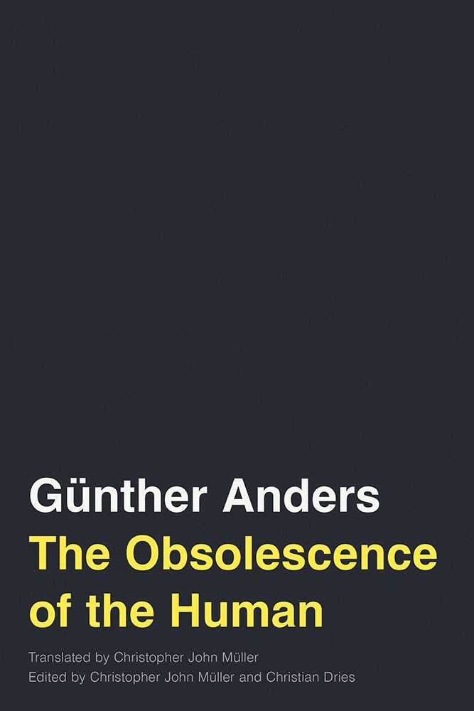

Rugby


Playing competitive rugby for over a decade with Rugby Gubbio 1984, including an early promotion to the Senior First Team (Serie B) as an Under-18 player, served as my primary school of character. Dedicating myself to an intensive schedule of five weekly training sessions and Sunday matches cultivated elite levels of discipline, accountability, and mental resilience. The sport instilled a profound "team-first" mentality, teaching me to absorb setbacks, correct errors immediately, and actively cover for teammates under pressure. Ultimately, though I made the difficult choice to pivot my focus toward academic pursuits during university, I carry these core values forward, being always ready to "keep carrying the ball".

Finance
Since 2021, I have cultivated my interests in personal finance, transitioning from empirical learning via virtual brokers to managing real capital. Moving away from speculative trading, I anchored my growth in classical investment literature and macroeconomic study. Today, I focus on a long-term, highly diversified, and conservative investment strategy focused on wealth preservation and risk mitigation. In this last years I grew my financial literacy and developed strategic patience, emotional resilience against market volatility, and an analytical, self-driven approach to data-backed decision-making.

Entrepreneurship
At 18, I launched a dropshipping e-commerce platform, providing a practical introduction to digital market dynamics and commercial legal regulations. This initial venture sparked a continuous focus on the startup ecosystem, specifically in identifying unaddressed problems and developing scalable solutions. My entrepreneurial mindset extends beyond the aerospace sector and the Space Economy into broader industrial development, where space-based R&D and advanced technologies intersect with terrestrial applications. This includes ventures in the information sector, such as conceptualizing platforms designed to make verified academic sources universally accessible and dynamically tailored to any user's educational background—a professional desire I would pursue pro bono for the advancement of human culture and knowledge.

Music
Pursued as a personal passion, my journey with the electric guitar has been a vital catalyst for my creativity and imagination. This artistic outlet uniquely intersected with my engineering studies, particularly within signal analysis, giving me the fascinating perspective of scientifically breaking down the acoustic and wave principles I had previously experienced intuitively as a musician. To this day, playing the guitar is more a hobby than anything else, but it's still a hell of a way to spend my time and I definitely see myself playing once in a while in my future.
Philosophy
During my final year of scientific high school, studying Latin literature—specifically the writings of Seneca and Epicurean texts—introduced me to the foundational principles of Stoic philosophy. Aligning with their ethical and moral values, I integrated these concepts into my academic pursuits and athletic discipline. Following graduation, I deepened this knowledge through the independent study of classical texts, including Seneca’s De Vita Beata and Epistulae Morales ad Lucilium, Marcus Aurelius’s Meditations, and modern historical overviews like Ryan Holiday's Lives of the Stoics, establishing a personal framework grounded in resilience, objectivity, and continuous self-improvement.


Failures
To figure out yet.